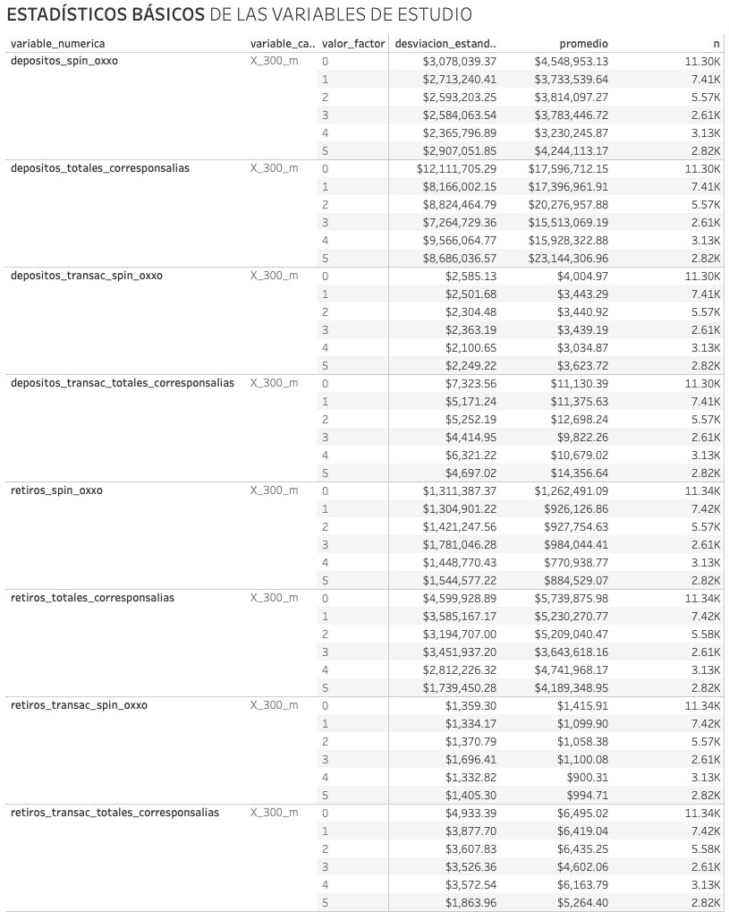
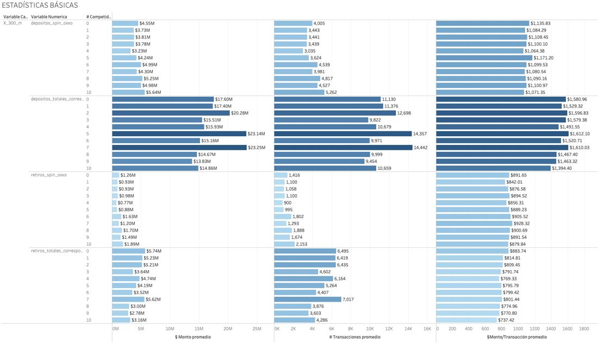

Datos para decidir
Casos reales de probabilidad y estadística aplicada a las ventas, la expansión y el entorno de una empresa.
Ruta de la sesión
Sesenta minutos, seis bloques. Haz clic en uno para saltar a él.
Introducción
Preguntas de negocio y tu papel como comunicador.
Enfoque analítico
Un objetivo, muchos caminos.
Casos de uso
De las ventas al medio ambiente.
Visualizar y comunicar
Claro, simple y honesto.
El reto de los datos
Conseguirlos y limpiarlos.
Cierre
Síntesis y proyectos.
Las preguntas
de toda empresa
Antes de hablar de métodos, hablemos de lo que realmente quieren saber las organizaciones.
5 MINSeis preguntas que toda empresa se hace
Cada una se puede responder con datos. Pasa el cursor para ver un ejemplo.
¿Cómo vender más?
Entender qué compran, quién y por qué.
¿A qué precio?
El precio que equilibra ingreso y demanda.
¿Dónde abrir?
Elegir ubicaciones con mayor potencial.
¿Qué puede salir mal?
Medir y reducir riesgos de toda naturaleza.
¿Qué pasará?
Predecir variables clave para planear.
¿Qué impacto dejamos?
Efectos sociales, económicos y ambientales.
Por qué importa a la comunicación corporativa
Comunicar bien es lograr coherencia entre lo que la organización es, hace, dice y cómo la perciben.
Un objetivo,
muchos caminos
Por qué conviene cuantificar y cómo se elige el método adecuado.
10 MINCuando las cifras sustentan el mensaje
Cuatro escenarios donde un resultado cuantitativo es indispensable.
En una crisis
Reconocer el problema y explicar con datos qué se está haciendo.
Al reportar impacto
Empleo, impuestos y huella ambiental respaldan la reputación.
Ante autoridades
Justificar permisos, inversiones o expansión con evidencia.
Al planear
Anticipar ventas o riesgos y comunicarlos con su margen de error.
«Incrementar las ventas» no es una pregunta
Un mismo objetivo se descompone en sub-objetivos, y cada uno admite varios enfoques. Clic en un enfoque para ver un caso.
Expansión geográfica
ENFOQUES GeoestadísticaFlujo vehicularClasificación de zonasPrecios óptimos
ENFOQUES Elección discreta (logit)Análisis conjuntoModelos linealesGuerra de precios
ENFOQUES Teoría de juegosSeries de tiempoSimulación de escenariosPredicción de la demanda
ENFOQUES Series de tiempoPredicción por similitudModelos de clasificaciónLa caja de herramientas
Cada método responde a un tipo de pregunta. Clic para ir al caso donde se usa.
Series de tiempo
¿Qué pasará mañana?
Modelos lineales
¿Qué factores influyen?
Clasificación
¿Qué tan probable es?
Segmentación
¿Qué grupos existen?
Geoespacial
¿Dónde ocurre?
Texto y lenguaje
¿Qué se dice?
Optimización
¿Cuál es la mejor opción?
Escenarios
¿Y si…?
Del dato al futuro: cuánta incertidumbre hay
Mientras menos claro el futuro, más honesta debe ser la respuesta: de un número a varios escenarios.
Claridad suficiente
Un número
Futuros probables
Intervalo de confianza
Con «rankings»
Probabilidades ordenadas
Futuros plausibles
Escenarios
Incertidumbre total
Exploración
| Cliente | Venta | P(x) | x·P(x) |
|---|---|---|---|
| Internacional | $1,000,000 | 0.1 | $100,000 |
| Local | $600,000 | 0.5 | $300,000 |
| En línea | $300,000 | 0.4 | $120,000 |
| E[X] = Σ x·P(x) | 1.0 | $520,000 |
Cambiar las probabilidades crea escenarios optimista o pesimista.
Casos de uso:
de las ventas
al planeta
Siete casos reales, un mismo hilo conductor.
30 MINCómo leer cada caso
Todos siguen la misma estructura: de la pregunta a lo que debes saber comunicar.
Pregunta
Hipótesis
Método
Resultado
Lectura
El recorrido: de la venta al entorno
Cada bloque nace de la pregunta anterior. Clic en una estación para saltar a ella.
Ventas
¿Qué quiere el cliente y cuánto venderemos?
Casos 1 · 2Expansión geográfica
¿Dónde abrir y contra quién competimos?
Caso 3Entorno socioeconómico
¿Qué efecto tenemos y cómo nos perciben?
Casos 4 · 5Entorno urbano
¿Cómo influye la movilidad de la ciudad?
Caso 6Entorno ambiental
¿Qué huella dejamos en el planeta?
Caso 7¿Por qué elegimos lo que elegimos?
Un cliente compara opciones y elige la de mayor utilidad. Nosotros no vemos la utilidad: la convertimos en probabilidad.
| Opción | Precio | Calidad | Marca | Utilidad |
|---|---|---|---|---|
| A | 3 | 4 | 0 | –2.0 |
| B | 2 | 5 | 1 | 1.5 |
| C | 4 | 5 | 1 | –1.5 |
Utilidad = –1.5·precio + 0.625·calidad + 1.375·marca. Coeficientes derivados de los valores del ejemplo.
Visualizar
y comunicar
El mejor análisis no sirve si quien decide no lo entiende, o lo entiende mal.
6 MINMismos datos, dos historias
Las ventas crecieron 8% en cuatro trimestres. Cambia dónde empieza el eje y observa el mensaje.
El gráfico adecuado a la pregunta
El mismo resultado, en una tabla y en un gráfico. ¿Cuál se entiende en cinco segundos?


Compararcategorías
Evoluciónen el tiempo
Distribucióny atípicos
Relaciónentre variables
Ubicacióngeográfica
Comunicar a quien decide
Tu valor como comunicador: traducir el análisis sin perder rigor ni exagerar su alcance.
1 · Una idea por láminaMenos es más
2 · El título es la conclusiónNo «Ventas 2026»
3 · Muestra la incertidumbreIntervalos, no certezas
4 · Di qué NO dice el modeloLos límites importan
5 · Termina en una decisiónY qué sigue
El reto de
los datos
Tener claro el objetivo no basta: hay que encontrar los datos y dejarlos listos para analizar.
6 MINEl objetivo es claro. ¿Y los datos?
En los casos anteriores combinamos fuentes muy distintas. Conseguirlas es de las partes más difíciles.
Oficiales
Censos, directorios económicos, cartografía.
Del sector
Asociaciones y bases internas de la empresa.
Encuestas
Se diseñan cuando el dato no existe.
Digitales
Noticias, redes y servicios en línea.
Geoespaciales
Satélites, tráfico y mapas.
De dato crudo a dato útil
El preprocesamiento es la fase menos vistosa y la que más determina la calidad del resultado.
Extracción
Preprocesamiento
Exploración
Modelación
Evaluación
Recalibración
¿Error o caso real?
Vacíos que hay que decidir.
Mismo dato, distinta forma.
Miles, millones, pesos.
Que las fuentes «hablen».
Un promedio puede mentir
Cinco registros de ventas por tienda, con los problemas típicos. Presiona «Limpiar» y compara el promedio.
| Tienda | Ventas | Fecha | Unidad | Problema |
|---|---|---|---|---|
| A | 1,250 | 03/11/20262026-11-03 | miles $ | formato de fecha |
| B | 1.21,200 | 2026-11-03 | millones $miles $ | unidades distintas |
| C | 98,000revisar | 2026-11-03 | miles $ | atípico (¿ceros de más?) |
| D | —1,225 | 2026-11-03 | miles $ | dato faltante |
| A | 1,250 | 2026-11-03 | miles $ | registro duplicado |
Qué nos llevamos
Cuatro ideas para recordar.
Pregunta primero
El método se elige según la pregunta, no al revés.
Hipótesis explícita
Decir qué creemos y cómo lo comprobaríamos.
Incertidumbre honesta
Probabilidades e intervalos, no certezas absolutas.
Comunicar con rigor
Claro, simple y consciente de los límites.
Proyectos relacionados
Para profundizar en cada caso. Clic para abrir.
¿Qué decisión de tu futura organización no debería tomarse sin datos?
Gracias. Preguntas y conversación.